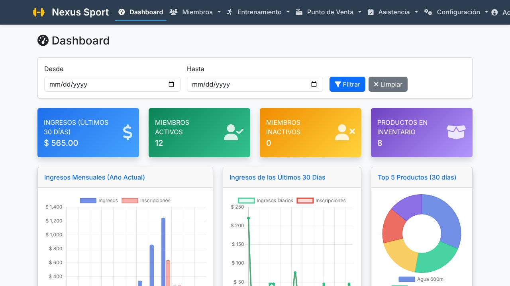
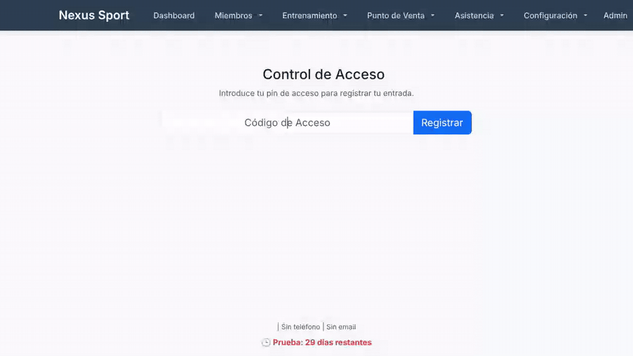
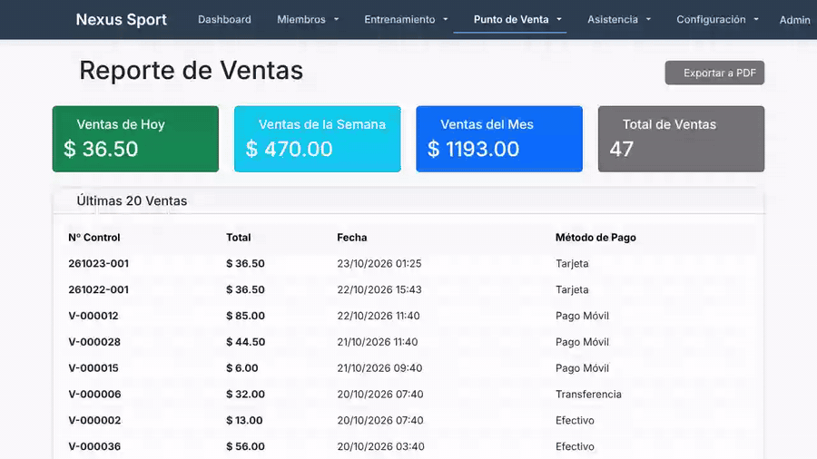

Inicio de sesión y dashboard
Acceso seguro y resumen de ingresos, miembros activos e inventario.
Miembros, membresías, punto de venta, rutinas, asistencia y reportes en una sola aplicación para Windows.
Ver demo Descargar
Una herramienta pensada para el día a día de un gimnasio.
Grabaciones reales de la aplicación (con datos de ejemplo).
Acceso seguro y resumen de ingresos, miembros activos e inventario.
Listado con estado de membresía, filtros y perfil detallado.
Agrega productos, elige método de pago y emite el ticket.
Ejercicios, rutinas y calendario de entrenamientos.

Registro de entrada con código e historial.

Ventas, inventario, pagos y caja chica.
GymManager.exe desde la sección Releases.Es un software de gestión para gimnasios que centraliza miembros, membresías, ventas, rutinas y asistencia.
En Windows. Se ejecuta como un programa y se abre en tu navegador.
Los datos se guardan localmente. Algunos componentes visuales (gráficos y tablas) se cargan desde internet.
Sí: USD, bolívares y tasas de cambio configurables.